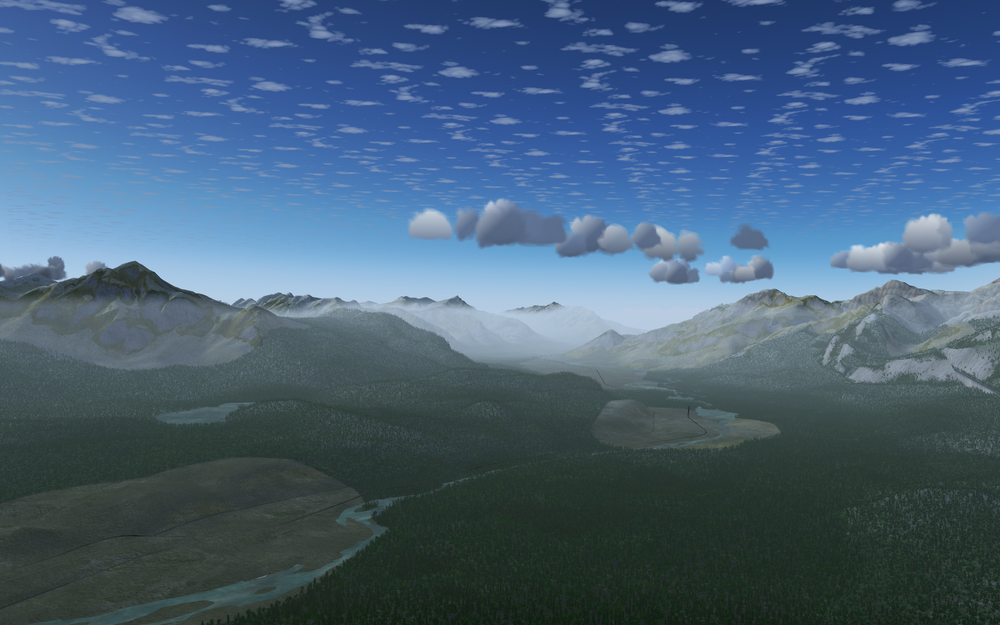

Vancouver, BC (w130n40)
Downtown Vancouver, BC at dusk, looking from the south. Kitsilano is in the foreground and Stanley Park is on the left. Take off from from Vancouver International Airport (CYVR).

Downtown Vancouver, BC at dusk, looking from the south. Kitsilano is in the foreground and Stanley Park is on the left. Take off from from Vancouver International Airport (CYVR).
Rocky Mountains near Jasper, AB. Take off from from Jasper Airport (CYJA).
We need proper bridge models here, but the famous Gateway Arch in St Louis, MO is easy to find. Take off from Spirit of St Louis Airport (KSUS).

The Canadian Shield north of Kingston, ON. The many small lakes bring the scenery to life. Take off from from Kingston Norman Rogers Airport (CYGK).